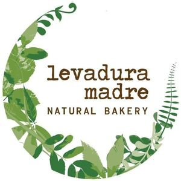

Trade Mark Journal No.2026/005 30 January 2026
WO0000001886119 (30,35,43)
Office of origin: European Union Intellectual Property Office (EUIPO)
Date of International Registration:1 October 2025
Date of designation in the UK:
1 October 2025

The mark contains the colours Brown Pantone 476 C, green Pantone 2274 C, green Pantone 2274 C, green Pantone 2276 C
- Class 30
- Oat-based food; biscuits and cookies; petit-beurre biscuits; pastry dough; baking dough; chocolate mousses; dessert mousses [confectionery]; pains au chocolat; chocolate-filled puff pastries; unleavened bread; gingerbread; ginger bread; breadcrumbs; bread crumbs; bread rolls; cereal-based preparations; quiches; sandwiches; sandwiches; bread, bread loaves and baguettes.
- Class 35
- Professional consultancy regarding commercial business; demonstration of goods; retail services in relation to bakery products; retailing, retailing in stores and via global computer networks of beers, wines, liqueurs and other alcoholic beverages, mineral waters, carbonated beverages, fruit drinks and fruit juices and other non-alcoholic beverages and food products in general; advertising services; commercial business management; support, assistance, advisory and consultancy services for business or company management; market study and research services; provision of business assistance regarding franchises; franchising services, namely, consultations and assistance in management, organization and promotion of restaurants and other establishments providing prepared food and beverages for consumption; import and export; commercial advice to consumers; commercial administration of licenses for third-party goods and services; outsourcing services; search for sponsors.
- Class 43
- Services for providing food and beverages; provision of food and beverages under franchise; take-out restaurant services; tapas bar services; self-service restaurants; snack bars; grill restaurants [rotisseries]; restaurants and hotels; grill restaurant; brasserie services; bars, cafeterias and canteens; meal preparation; food services by contract; take-away food and beverage services; advice on cooking; rental of apparatus for cooking; restaurant information services.
OBRADOR LEVADURA MADRE, S.L.
Representative: ROEB Y CIA, S.L., Plaza de Cataluña, 4 - 1º, E-28002 Madrid, SPAIN